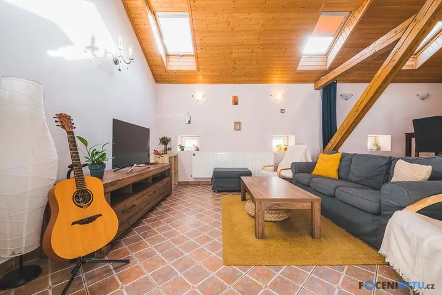
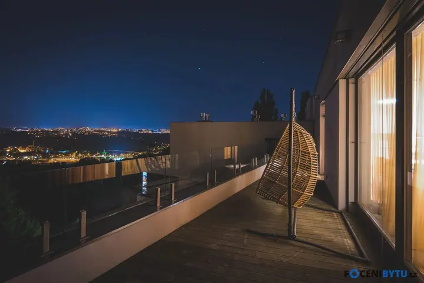
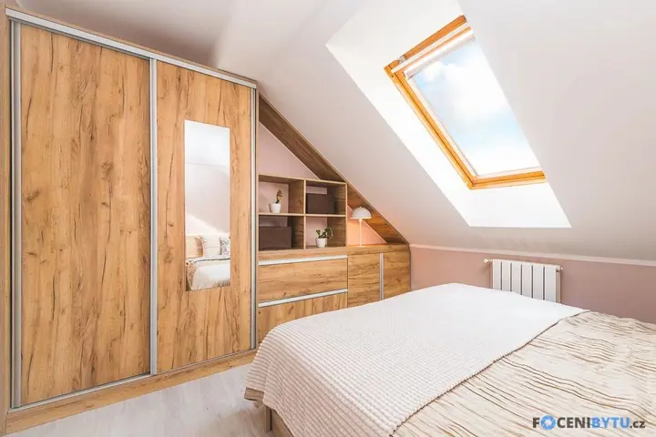
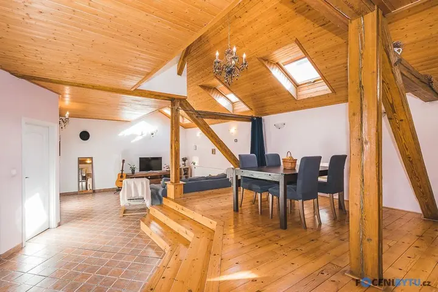
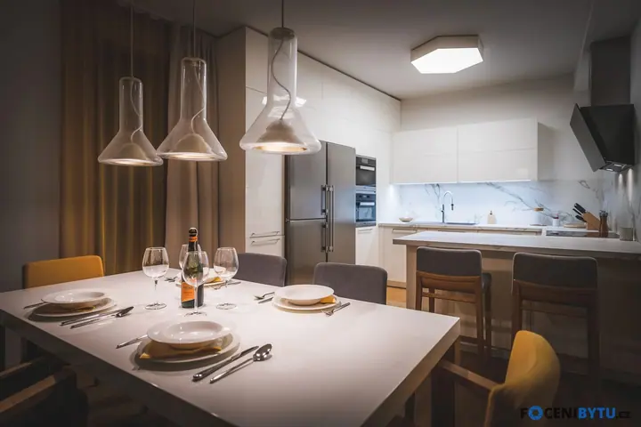

01 / 04
Focení nemovitostí
Nafotím byty, domy i pozemky k prodeji nebo pronájmu. Zvládnu i těžko přístupná a špatně osvětlená místa, aby nemovitost v inzerátu vynikla.
Zeptat se na termín→








Fotky, které prodávají vaši nemovitost
Zeptat se na termín →(01) Ahoj
Jmenuji se Lukáš Bartoš a fotím byty a domy v Brně a okolí, aby váš inzerát zaujal hned na první pohled. K fotkám interiéru přidám letecké záběry z dronu i videoprohlídku , takže zájemci nemovitost poznají dřív, než přijdou na prohlídku.
(02) Co dělám
01 / 04
Nafotím byty, domy i pozemky k prodeji nebo pronájmu. Zvládnu i těžko přístupná a špatně osvětlená místa, aby nemovitost v inzerátu vynikla.
Zeptat se na termín→02 / 04
Jako pilot dronu přidám k fotkám i videu pohled shora. Ukáže okolí, pozemek a polohu nemovitosti, kterou ze země nevyfotíte.
Zeptat se na termín→03 / 04
Virtuální prohlídka Matterport s půdorysem a výměrami. S kolegyní Nikčou připravíme nemovitost na focení tak, aby působila co nejlépe.
Zeptat se na termín→Dále nabízím
Videozáběry interiéru i exteriéru, letecké záběry z dronu, infografika realitky, text ve videu a hudba. Na přání s výstupem makléře nebo s komentující modelkou.
↗(04) Postup
Od první zprávy po hotovou galerii.
Krok 1 z 4
Přes e-mail, telefon nebo formulář se domluvíme na termínu, který vám nejvíc vyhovuje.
Krok 2 z 4
Když budete chtít, s kolegyní připravíme nemovitost na focení formou homestagingu. Na místě vám také rád poradím.
Krok 3 z 4
Přijedu za vámi a nemovitost zpravidla nafotím během 30 až 60 minut, podle domluvy i s dronem nebo videem.
Krok 4 z 4
Hotové fotografie ode mě dostanete e-mailem do 2 dnů, připravené rovnou do inzerátu.
Na první dojem máte jen jeden pokus.
(05) Za objektivem
Fotografie vždy patřila mezi mé koníčky i vášně. Jako vedoucí pobočky Megapixelu jsem prošel desítkami školení o focení a fototechnice, ale nejvíc mi dala více než dvanáctiletá praxe. Fotil jsem svatby, kulturní akce i portréty a nejbližší mi je reportážní fotografie.
Mojí prioritou se ale stala realitní fotografie, které se věnuji od roku 2018. Jako obchodní zástupce služby Ideální nájemce (UlovDomov) jsem poznal realitní trh, obsazování bytů i tvorbu fotek do inzerce. Zjistil jsem, že pro rychlý pronájem i prodej jsou klíčové hlavně poutavé fotky.
Nepracuji sám. Videoprohlídky natáčí a stříhá Bety, kameramanka s praxí realitní makléřky, a o homestaging a interiérový design se stará Nikča. Fotky, video, dron i přípravu nemovitosti tak u nás vyřešíte na jednom místě.
Lukáš
Lukáš Bartoš · Fotograf nemovitostí a pilot dronu
Menší byt (1+kk, 1+1) nafotím za 2 990 Kč, střední byt za 3 490 Kč, větší byt za 3 990 Kč a dům s pozemkem za 4 490 Kč. Podle velikosti dostanete 8 až 20 fotografií.
Hotové fotografie posílám e-mailem do 2 dnů od focení.
V rámci Brna jezdím zdarma. Mimo Brno počítám 9 Kč za kilometr.
Ano. Letecké fotky stojí 2 500 Kč k bytu a 3 000 Kč k domu. Videoprohlídka s dronem začíná na 6 000 Kč, výstup makléře ve videu je za příplatek 1 000 Kč.
(07) Kontakt
Napište pár vět o tom, co si představujete, a termín, který se vám hodí.